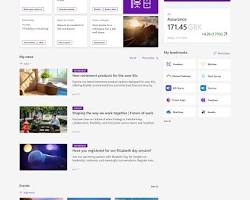

By Renata Oliveira
Typography is often invisible to the average user, yet it dictates how we consume information. A change in weight or line spacing can be the difference between a site that feels like a trusted newspaper and one that feels like a casual blog. Below, I compare two giants of digital publishing.
Link: nytimes.com
The NYT uses a custom serif typeface for its headlines. This choice is rooted in tradition. The small strokes at the end of the letters mimic the look of traditional print ink, which immediately tells the user: "This is a serious, established news source."
The Role of Hierarchy: They use very bold, large headlines contrasted with much smaller, lighter sub-headers to guide the eye through multiple stories quickly.
Link: medium.com

Medium is widely praised by designers for its typography. Unlike the dense layout of a news site, Medium focuses on Leading (line spacing) and White Space. The lines are spaced widely enough that the eye doesn't get tired while reading a 10-minute article.
Why I Like It: The typeface is clean and the line length is limited, which is the "golden rule" for digital readability. It feels calm and personal.
While the New York Times uses typography to project authority, Medium uses it to prioritize the reading experience. As a content creator, I’ve learned that the "best" typography isn't the prettiest—it's the one that helps the user achieve their goal without friction.